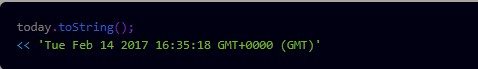
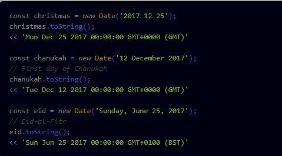
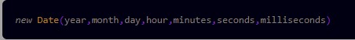

Week03
Objects
- Objects are often used to keep any related information and functionality together in the same place.
- JavaScript code can be placed inside square brackets and the property key will be the return value of that code.
- Calling a method is the same as invoking a function, so parentheses need to be placed after the method name.
- Theinoperator can be used to check whether an object has a particular property.
- We can loop through all of an object’s properties and methods by using afor inloop.
- The Object.keys() method will return an array of all the keys of any object that is provided as an argument.
- ES2017 also adds some the Object.values() that works in the same way, but returns an array of all the object's value:
- New properties and methods can be added to objects at any time in a program. This is done by simply assigning a value to the new property.
- You can change the value of an object’s properties at any time using assignment.
- Any property can be removed from an object using the delete operator.
- It’s even possible for an object to contain other objects. These are known as nested objects.
- An object literal can be passed as a parameter to a function.
- The keywordthisrefers to the object that it is within. It can be used inside methods to gain access to the object’s properties.
- JavaScript has a number of other built-in global objects that can be accessed from anywhere in a program.
- JSON is a string representation of the object literal notation that we have just seen.
- Property names must be double-qouted
- Permited values are doulbe-qouted strings, numbers, true, false, null, arrays and objects
- Functions are not permitted values
- All the properties and methods of theMathobject are immutable and unable to be changed.
- The Math object has eight properties that represent a mix of commonly used math constants.
- The MATH OBJECT also has several methods to carry out a variety of useful mathematical operations.
- The Math.abs() method returns the absolute value of a number. So if the number is positive, it will remain the same, and if it’s negative, it will become positive
- The Math.ceil() method will round a numberupto the next integer, or remain the same if it is already an integer
- The Math.floor() method will round a numberdownto the next integer, or remain the same if it is already an integer
- The Math.round() method will round a number to thenearestinteger:
- The Math.trunc() method that returns the integer-part of a number – that is, it gets truncated at the decimal point
- The Math.exp() method will raise a number to the power of Euler’s constant
- The Math.pow() method will raise any number (the first argument) to the power of another number (the second argument)
- The Math.sqrt() method returns the positive square root of a number
- The Math.cbrt() method returns the cube root of numbers
- The Math.hypot() method returns the square root of the sum of the squares of all its arguments. This can be used to calculate the hypotenuse of a right-angled triangle
- The Math.log() method returns the natural logarithm of a number:
- The Math.max() method returns the maximum number from its arguments
- The Math.min() method unsurprisingly returns the minimum number from the given arguments
- The Math.sin() returns the sine of an angle
- The Math.cos() returns the cosine of an angle
- The Math.tan() returns the tangent of an angle
- Math.asin(), Math.acos(), Math.atan()
- Methods for the hyperbolic functions, sinh(), cosh(), tanh() were also added in ES6, as well as their inverses:
- The Math.random() method is used to create random numbers, which can be very useful when writing programs.
- DATE OBJECTS contain information about dates and times. Each object represents a single moment in time.
- A constructor function is used to create a new date object using the new operator
- The variable today now points to a Date object. To see what the date is, we use the toString() method that all objects have
- 
- 
- 
- GETTER METHODS
- getDay(), getUTCDay()
- getDate(), getUTCDate()
- getMonth(), getMonth()
- getFullYear(), getUTCFullYear(), getYear()
- getHours(), getUTCHours(), Munites, Seconds, Milliseconds... getTime()